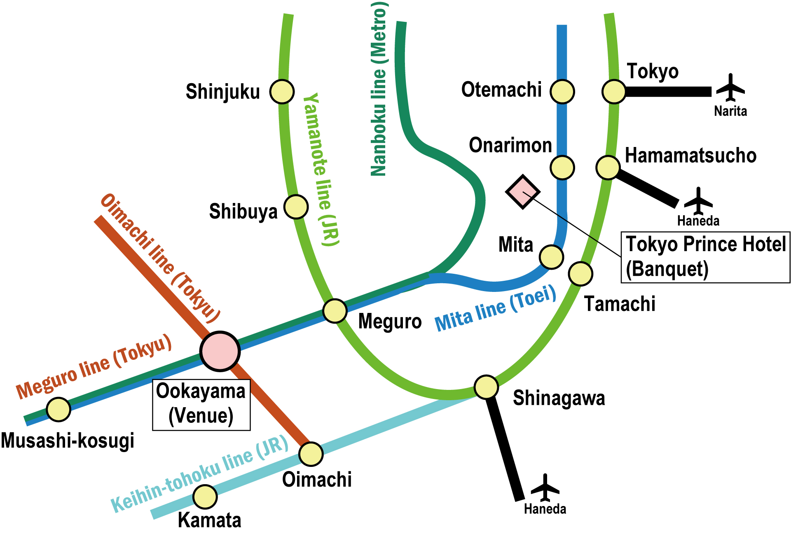

Main Conference Venue
Kuramae Hall, Science Tokyo Front
Location: Ookayama Campus, Institute of Science Tokyo
Address: 2 Chome-12-1 Ookayama, Meguro City, Tokyo 152-0033
Social Event Venues
Welcome Reception
October 26 (Mon), 18:00–Location: Tsubame Terrace (Located on Ookayama Campus)
Address: 2 Chome-12-1 Ookayama, Meguro City, Tokyo 152-0033
Banquet
October 28 (Wed), 19:00–21:00Location: Tokyo Prince Hotel
Address: 3 Chome-3-1 Shibakoen, Minato City, Tokyo 105-8560
Website: https://www.princehotels.com/tokyo/location/
- Train: Approx. 30 min from Ookayama Station to Onarimon Station.
- Walk: 1 min walk from Onarimon Station (Exit A1) to Tokyo Prince Hotel.
Accommodation & Access Guide
The Organizing Committee will NOT arrange hotel accommodations for participants. As Tokyo offers a wide range of hotels at various price levels, participants are kindly requested to make their own reservations through hotel booking services such as Booking.com, Expedia, or other online travel agencies.
The symposium venue is located at Ookayama Campus, Institute of Science Tokyo, a short walk from Ookayama Station on the Tokyu Meguro and Tokyu Oimachi Lines. The banquet will be held at the Tokyo Prince Hotel, located near Onarimon Station and Shibakoen Station, and within walking distance of Hamamatsucho Station.

Recommended Accommodation Areas
The following areas are recommended for accommodation because they provide convenient access to both the symposium venue and the banquet venue (most hotels are within approximately 20–30 minutes by public transportation):
- Oimachi Area (including Kamata): Convenient access to the venue via the Tokyu Oimachi Line. Kamata also offers a wide selection of reasonably priced hotels.
- Shinagawa Area (including Tamachi and Mita): A major transportation hub with excellent access to the symposium venue, the banquet venue, the Shinkansen, and Haneda Airport.
- Tokyo Station Area (including Otemachi and Hibiya): Ideal for participants wishing to stay in the city center while maintaining convenient access to both the symposium venue and the banquet venue.
- Musashi-Kosugi Area: Direct access to Ookayama via the Tokyu Meguro Line, with a variety of modern hotels and convenient transportation.
Travel Tip: For daily travel to the symposium, direct train services are available between Ookayama and Oimachi, Mita, Otemachi, and Musashi-Kosugi. Tokyo has an extensive and reliable public transportation network, so participants may also choose accommodations in other areas according to their preferences.